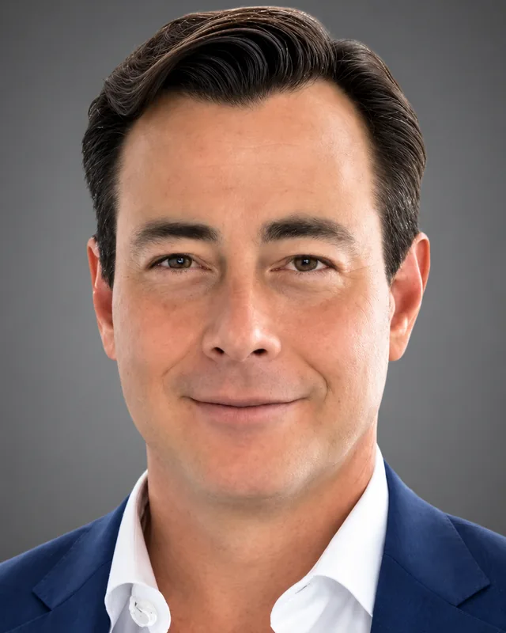
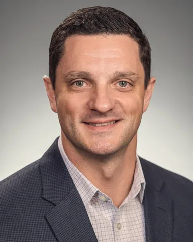

Our team
The people behind ImageAiD.
Clinicians, engineers, and operators working on one question: how do we find vascular disease earlier, where patients already are?
Leadership
-
Josh Hanson
Chief Executive Officer
Stanford Biodesign trained. Mayo Clinic Gonda Vascular Center.
-

Alex Richardson
Chief Technology Officer
Engineer for DARPA, Medtronic, and Abbott. $100M raised and 3 medtech exits.
-

Chris Galando
Head of Commercialization
20+ years in sales leadership. Led cardiovascular sales for J&J and Stryker.
Scientific advisory board
-
Robert McBane, MD
Chair, Scientific Advisory Board
25+ years in cardiovascular medicine at Mayo Clinic. 200+ publications. Master of the Society for Vascular Medicine.
Want to work with us?
We’re glad to hear from clinicians, engineers, and partners who care about vascular health.